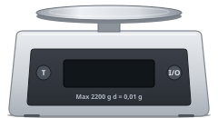
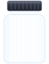
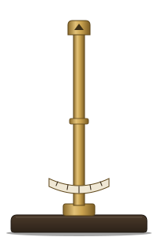
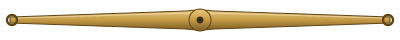
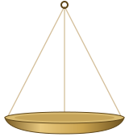

sc4.5: sprites i dobbelt størrelse
 kateder.svg (ny)
kateder.svg (ny)

vaegt.svg (som sc4.2)
vejebaad.svg (som sc4.2)

pulverglas.svg (som sc4.2)

skaal_fod.svg (som sc4.1)

skaal_arm.svg (som sc4.1)

skaal_skaal.svg (som sc4.1)